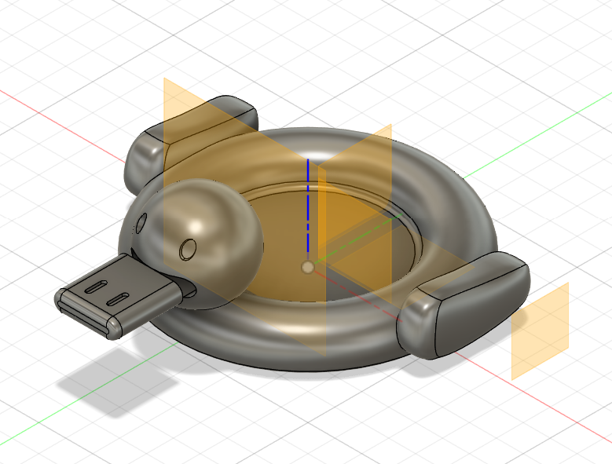
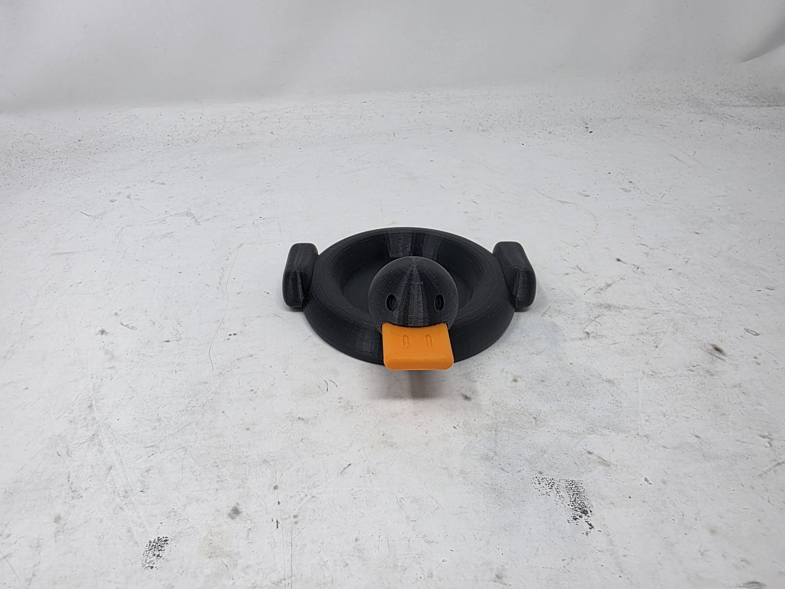
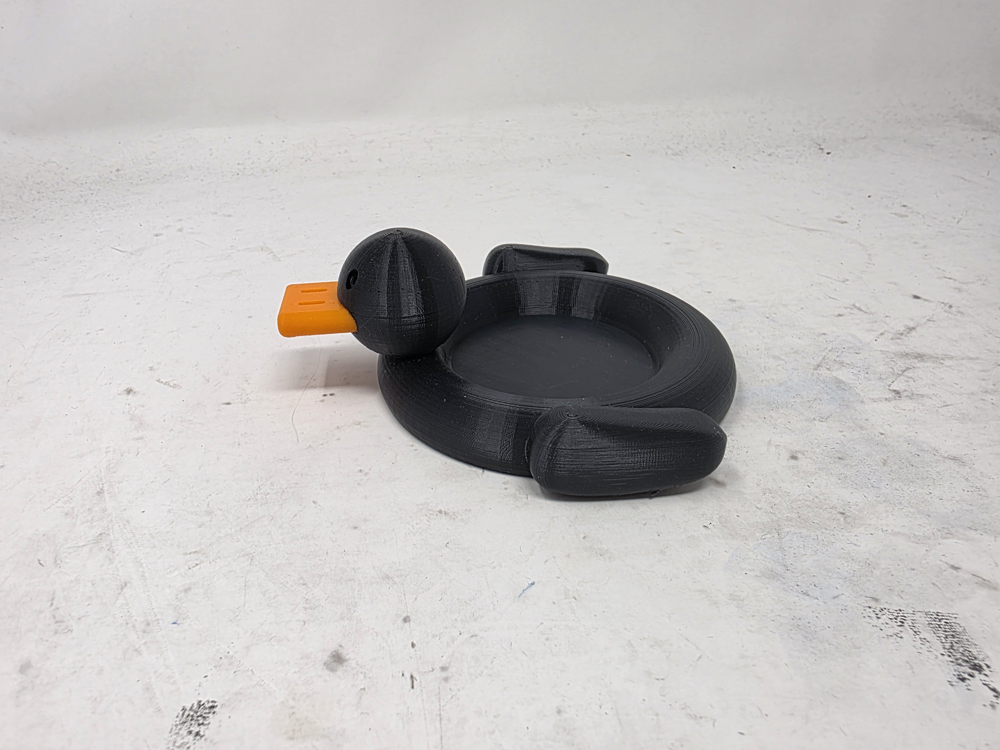

Week 5: 3D Design & Printing
Assignment: Model and 3D print something
For this week, I decided to model a duck floatie trinket dish. Due to the inset area in the middle of the dish, the rounded edges, and the attached head and beak that hang out, it would not have been able to make this object using the techniques we have learned before. Since I wanted the duck's beak to be the proper orange color, I modeled it separately from the rest of the body so that I could print it in a different color and insert it in afterwards. I also learned how to model with forms in Fusion a little bit for the wings, which are a nonstandard organitc shape that you wouldn't be able to produce in Fusion otherwise. Here's the model I initially made in Fusion:

Download Duck Floatie Trinket Dish Model
I then printed the body of the duck in black PLA and the beak in orange PLA. There were surprisingly few supports in the entire design, and with a bit of sanding the two parts fit together afterwards very tightly. I had also intially modeled two eyes for the duck in order to insert different colored pieces for the eyes, but when I actually printed the pieces they were too small and stuck to the brim that I had to use. So I just ended up not filling in the eyes, which I still think looks pretty neat. Here's the final printed product from different angles!



Assignment: 3d Scan Something
For this part of the assignment, I 3D scanned the CS50 Debugging Duck (ddb) using the scanner in class and the photobooth. Here are the files from that experience:
Download Duck Scan Point CloudDownload Duck Scan Mesh
Assignment: Model of Final Project
Here's a model of my final project that I made in Fusion. It focuses mostly on the mechanism that moves the bird up and down. Instead of the oval cam I used for my kinematic machine, I decided to use a crankshaft instead in order to minimize the space used for the same amount of vertical displacement. It also has other nice additional features, such as press-fit sides, a lifter to put the motor in the right spot, and holes for dowel attachment points to hold the bird eventually.
 Download Final Project Model
Download Final Project Model